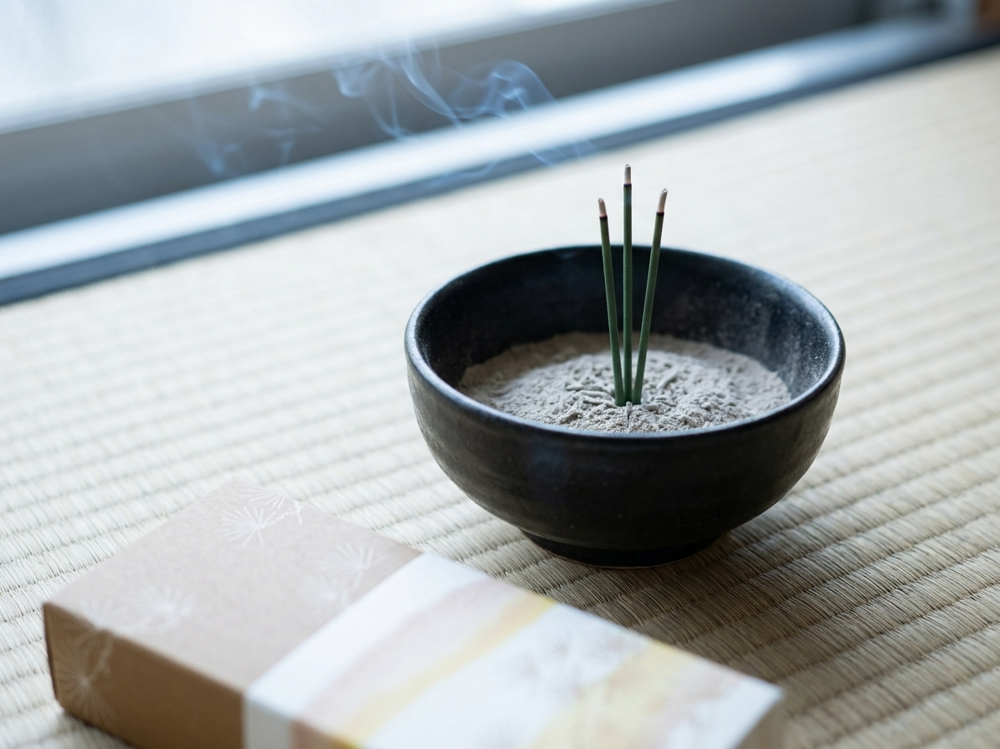

A single stick, a thin trail of smoke, a room that suddenly feels calmer — Shoyeido's Moss Garden blend, made in Kyoto since the Edo period.

Shoyeido has blended incense in Kyoto since 1705 — this isn't a mass-market air freshener, it's a centuries-old formula.
The Moss Garden blend is soft and woody — meant to fill a room gently, not announce itself from the hallway.
A single box covers months of daily use — light one during tea, reading, or a quiet evening wind-down.
Light one stick, set it in a small holder, and let the scent do the rest. It's one of the simplest ways to mark a transition — from work to rest, from noise to quiet.
Moss Garden is a soft, earthy fragrance inspired by the mossy temple gardens of Kyoto — grounding without being heavy.
Hold a flame to the tip for a few seconds, then blow it out gently.
Place it in a heatproof holder or bowl of ash or sand.
Each stick burns for around 20-30 minutes, releasing a soft, even scent.
It's designed to be gentle and ambient rather than overpowering — noticeable, not overwhelming.
Any heatproof incense holder or a small bowl with ash or sand works — see our companion ceramic holder pick.
With 500 sticks and roughly 20-30 minutes per stick, it typically lasts for months of regular use.
Handcrafted incense from Kyoto's Shoyeido — see current pricing and availability on Amazon.
Check Price on Amazon →